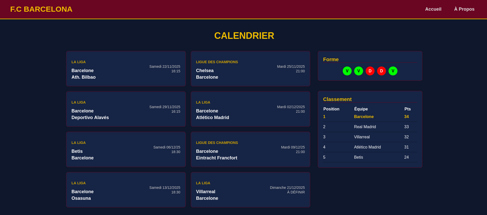

Étudiant en
BUT Réseaux & Télécoms
Je m'appelle Abdelmounim Ahmed, j'ai 19 ans. Bienvenue sur mon portfolio. Ce site retrace mon évolution, mes projets (SAÉ) et mes apprentissages réalisés lors de cette première année.

Abdelmounim Ahmed
Étudiant en BUT R&T (1A)
IUT Grand Ouest Normandie, Ifs
Présentation Générale
J'ai 19 ans et j'étudie actuellement en BUT Réseaux et Télécommunications. J'ai choisi cette filière car le fonctionnement des infrastructures réseaux et la manière dont les données circulent m'intéressent beaucoup. Cette première année a été l'occasion d'acquérir de bonnes bases pratiques via les Situations d'Apprentissage et d'Évaluation (SAÉ).
Ce qui me plaît dans ce domaine, c'est la logique et la rigueur que ça demande. À côté de ça, j'ai aussi une expérience professionnelle dans la vente. Cela m'a appris à écouter, à être responsable et à m'adapter facilement aux gens et aux imprévus, des qualités utiles pour travailler en équipe sur des projets techniques.
Savoirs Techniques
- Modèle OSI et protocoles TCP/IP
- Câblage et adressage IP
- Bases en Python
- Bases en Web (HTML/CSS)
- Anglais technique lié aux réseaux
Savoir-être
- Travail en équipe
- Curiosité technique
- Rigueur et ponctualité
- Bon relationnel
- Capacité d'adaptation
Mon Projet Professionnel
Intégrer une école d'ingénieurs
Après mon BUT, mon objectif est d'intégrer une école d'ingénieurs spécialisée dans les réseaux ou les télécoms. J'aimerais vraiment mettre en pratique ce que j'apprends à l'IUT sur le terrain. Mon but est de développer de solides compétences techniques pour pouvoir, à terme, gérer de vrais projets d'infrastructures.
Mes SAÉ (Semestre 1)
Voici un aperçu de mes projets pratiques de première année. Vous pouvez cliquer sur "Voir la page dédiée" pour comprendre ce que j'ai fait, ce que j'ai appris et les compétences que j'ai pu valider.
SAÉ 1.01
Hygiène Info & Cyber
Mieux comprendre les risques informatiques via le MOOC de l'ANSSI, et tester des failles (mots de passe, force brute) lors de travaux pratiques.
SAÉ 1.02
S'initier aux réseaux
Création d'un réseau local complet pour l'entreprise fictive Fibre&Company : configuration de routeurs, VLANs et installation d'un serveur sous Proxmox.
SAÉ 1.03
Dispositifs de transmission
Manipulations en TP pour comprendre comment se transmet un signal physique, que ce soit sur un câble en cuivre ou via une fibre optique.
SAÉ 1.04
Se présenter sur Internet
Création d'un site web complet en HTML et CSS sur le thème du FC Barcelone, en respectant les normes d'accessibilité W3C et WCAG.
SAÉ 1.05
Traitement des données
Utilisation du langage Python pour extraire des données géographiques d'Internet (API OpenStreetMap) et les mettre en forme de façon lisible.
Sensibilisation à l'hygiène informatique et à la cybersécurité
1. Le contexte et le but du projet
L'objectif de cette SAÉ était de nous faire prendre conscience des risques liés à l'informatique aujourd'hui. De mon côté, j'ai suivi les cours du MOOC de l'ANSSI pour apprendre les bons gestes. Ensuite, en groupe, nous avons travaillé sur un cas pratique (un TP) pour voir concrètement comment les piratages peuvent arriver, et nous avons présenté nos recherches à l'oral.
2. Ce que j'ai fait concrètement
Avec mon équipe, nous avons choisi de travailler sur les mots de passe utilisateurs. Voici les tâches que nous avons menées :
- Recherche sur ce qui fait un bon mot de passe (complexité, renouvellement) selon l'ANSSI.
- Utilisation de l'outil Hydra sous Kali Linux (TP "Jean Boomer") pour comprendre comment fonctionne une attaque par "force brute".
- Utilisation de CUPP pour voir comment on peut générer une liste de mots de passe probables en connaissant juste quelques infos sur une cible.
- Recherche sur l'utilité des gestionnaires de mots de passe pour se protéger.
3. Trace Visuelle : Présentation de notre travail
Voici la page de garde de la présentation que nous avons faite pour expliquer nos recherches.

Mon retour d'expérience
Les difficultés : Ce n'était pas évident de bien s'organiser en groupe au début. On a dû apprendre à bien répartir les tâches pour que tout le monde ait un temps de parole équitable pour l'oral.
Ce que j'ai retenu : Ça m'a vraiment fait réaliser à quel point on est vulnérable si on ne fait pas attention. J'ai compris pourquoi on nous demande des mots de passe aussi compliqués, et j'ai appris à utiliser des outils système sous Linux.
S'initier aux réseaux informatiques
1. Le contexte et le but du projet
Nous devions jouer le rôle de techniciens réseaux pour une fausse entreprise appelée Fibre&Company. Le but était de construire toute leur architecture réseau de A à Z en respectant un cahier des charges précis. C'est le cœur de notre formation.
2. Ce que j'ai fait concrètement
Dans mon groupe, j'ai beaucoup travaillé sur la configuration du matériel (grâce aux bases vues sur Cisco NetAcad). Mes actions principales :
- Création du schéma du réseau sur le simulateur Cisco Packet Tracer pour faire des tests.
- Configuration physique des switchs (commutateurs) et des routeurs avec Putty, en ligne de commande.
- Mise en place des adresses IP et séparation du réseau en créant des VLANs.
- Installation d'une machine virtuelle sous Linux Debian 13 via Proxmox pour faire fonctionner les services de l'entreprise (serveur web, partages de fichiers).
Mon retour d'expérience
Les difficultés : La technique, ça allait, mais communiquer dans le groupe était compliqué. Comme le réseau est grand, si quelqu'un change un paramètre sur son routeur sans prévenir les autres, tout tombe en panne.
Ce que j'ai retenu : On a résolu le problème en faisant des comptes-rendus à chaque étape pour se tenir au courant. Techniquement, je sais maintenant configurer un petit réseau d'entreprise, mais j'ai surtout appris que la communication dans une équipe technique est primordiale.
Découvrir un dispositif de transmission
1. Le contexte et le but du projet
Ce projet consistait à comprendre comment la donnée passe concrètement dans les câbles. Nous avons fait des mesures en laboratoire sur deux supports différents : les vieux câbles en cuivre et la fibre optique (qui est beaucoup plus utilisée aujourd'hui).
2. Ce que j'ai fait concrètement
C'était un vrai travail de "technicien télécoms". Je me suis surtout concentré sur la fibre optique dans notre groupe :
- Mesure des défauts sur un câble cuivre (méthode DTF) pour voir à quelle distance se trouve un problème éventuel.
- Utilisation d'un oscilloscope pour voir physiquement le signal passer.
- Rédaction complète du compte-rendu sur la fibre optique.
- J'ai calculé la perte théorique de puissance (en décibels, dB) de notre câble de fibre optique, puis je l'ai comparée avec la vraie mesure faite par la machine.
Mon retour d'expérience
Les difficultés : On a eu beaucoup moins de temps d'explications (30 minutes) que les autres groupes avant de commencer les manipulations sur la fibre. On était un peu perdus au début.
Ce que j'ai retenu : J'ai dû faire mes propres recherches sur internet pour bien comprendre comment ça marchait. Ça a fini par payer et j'ai réussi à bien maîtriser le sujet. J'ai aimé ce côté "recherche par soi-même".
Se présenter sur Internet
1. Le contexte et le but du projet
Pour ce projet individuel, le but était de créer un site web complet en partant de zéro. Il fallait utiliser ce qu'on avait vu en cours (HTML et CSS) mais avec une grosse contrainte : respecter des normes très strictes d'accessibilité sur le web (pour les malvoyants par exemple).
2. Ce que j'ai fait concrètement
J'ai décidé de faire mon site sur le FC Barcelone. J'ai codé la structure des pages (calendrier des matchs, fiches des joueurs) en HTML, et j'ai géré tout l'aspect visuel avec du CSS (en utilisant Flexbox et Grid pour que le site s'adapte aux tailles d'écrans).
3. Trace Visuelle : Rendu du Site Web
Voici la page d'accueil de mon site, avec les couleurs du club et les fonctionnalités demandées.

Mon retour d'expérience
Les difficultés : Passer les tests officiels (validateur W3C et normes WCAG) a été vraiment long. Le moindre problème de couleur ou de balise mal placée générait une erreur qu'il fallait corriger.
Ce que j'ai retenu : Ça demande beaucoup de patience, mais ça m'a appris à respecter un cahier des charges très strict, ce qui est très courant dans le monde professionnel.
Traitement des données
1. Le contexte et le but du projet
C'était mon premier "vrai" projet de programmation. L'objectif était de créer un programme capable d'aller chercher des informations sur internet (via une API), de trier ces informations et d'en faire quelque chose d'utile et de lisible.
2. Ce que j'ai fait concrètement
J'ai codé en Python pour ce projet, avec les actions suivantes :
- Connexion à l'API de cartes géographiques OpenStreetMap.
- Lecture de données complexes au format JSON et XML.
- Utilisation de la librairie Pillow pour télécharger des morceaux de cartes et ajouter des points dessus.
- Écriture du résultat final dans un fichier texte bien formaté (en Markdown).
Mon retour d'expérience
C'était super intéressant parce qu'on sortait des petits exercices de TP pour faire un vrai programme utile. Ça m'a prouvé que je savais manipuler de la donnée brute et m'en servir. C'est une base solide pour plus tard, quand on devra faire des petits scripts pour automatiser des choses sur nos réseaux.
Bilan de compétences
Synthèse de mes apprentissages et validation des compétences du Semestre 1.
Ce premier semestre en BUT R&T m'a permis d'acquérir les bases techniques de mon futur métier. À travers mes différentes SAÉ, j'ai pu valider plusieurs Apprentissages Critiques (AC) répartis dans les trois grandes compétences (RT) de la formation.
RT1 – Administrer les réseaux et l'Internet
Niveau 1 : Assister l'administrateur du réseau
C'est le cœur du métier. J'ai appris comment fonctionne un réseau et comment le paramétrer. J'ai pu travailler sur les AC suivants :
-
AC 11.02 - Comprendre l'architecture des systèmes numériques :
Acquis lors des SAÉ 1.01 et 1.02 en comprenant le rôle des différents serveurs et machines.
-
AC 11.03 - Configurer les fonctions de base du réseau local :
Validé lors de la SAÉ 1.02 où j'ai configuré les VLANs, les switchs et les routeurs Cisco.
-
AC 11.04 - Maîtriser les systèmes d'exploitation :
Travaillé lors de la SAÉ 1.01 (sur Kali Linux pour le Hacking) et la SAÉ 1.02 (installation d'un serveur Debian 13).
-
AC 11.05 - Identifier les dysfonctionnements du réseau :
Validé grâce à mes recherches de failles (SAÉ 1.01) et lors du diagnostic des pannes de notre infrastructure de groupe (SAÉ 1.02).
RT2 – Connecter les entreprises et les usagers
Niveau 1 : Découvrir les transmissions
Cette partie touche à l'aspect très matériel ("les câbles") de la formation.
-
AC 12.01 - Mesurer et analyser les signaux :
Totalement validé pendant la SAÉ 1.03 en utilisant un oscilloscope pour calculer le temps de parcours d'une impulsion sur un câble.
-
AC 12.03 - Déployer des supports de transmission :
Validé (SAÉ 1.03) grâce à nos manipulations physiques (photométrie) sur la fibre optique et sur les câbles en cuivre.
RT3 – Créer des outils et des applications
Niveau 1 : S'intégrer dans un service informatique
C'est la partie programmation et développement. Ces compétences me serviront à créer des petits logiciels pour automatiser mon futur métier.
-
AC 13.01 - Utiliser un système informatique et ses outils :
Validé sur tous les projets informatiques, notamment lors du codage de la SAÉ 1.04 et 1.05.
-
AC 13.02 - Lire, exécuter et modifier un programme :
Prouvé via la SAÉ 1.05 où j'ai dû écrire et faire fonctionner un code Python fonctionnel.
-
AC 13.04 - Connaître l'architecture d'un site Web :
Validé avec succès avec la SAÉ 1.04 en concevant un site de A à Z (HTML/CSS) pour le FC Barcelone.
-
AC 13.05 - Gestion de données :
Compris et appliqué dans la SAÉ 1.05 en manipulant des données cartographiques (API OpenStreetMap).
Mes progrès et mes objectifs
Ce semestre m'a vraiment fait progresser sur deux points : la technique (je n'avais jamais configuré de réseau ou créé de site de zéro avant) et le travail d'équipe. Le projet 1.02 m'a appris qu'être bon en technique ne suffit pas si on ne sait pas communiquer avec ses collègues.
Pour le semestre prochain, mon objectif est d'être encore plus à l'aise sur la ligne de commande (routeurs) et de mieux gérer mon temps de travail lors des manipulations pratiques.